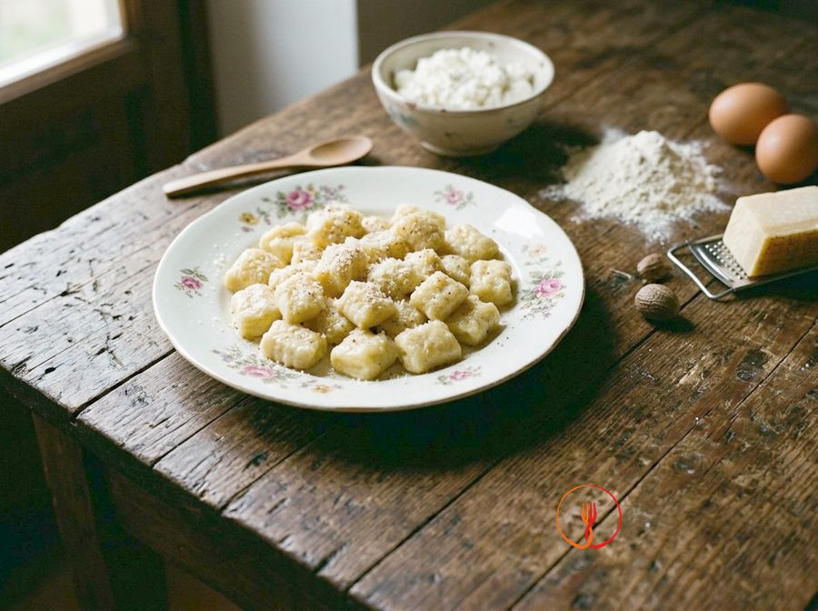

Gnocchi di ricotta
Ingredienti
- ricotta vaccina ben scolata400 gr
- farina 00180 gr
- uovo medio1 numero
- parmigiano grattugiato50' gr
- Noce moscataq.b.
- sale5 gr
Allergeni
Glutine, Latte, Uova
Può contenere tracce di: Senape, Soia.
Procedimento
- Trasferisci la ricotta in un colino e lasciala scolare per almeno 30 minuti, eliminando il liquido in eccesso.
- Mettila in una ciotola e lavorala con una forchetta fino a ottenere una consistenza cremosa.
- Aggiungi l'uovo, il parmigiano, il sale e una grattugiata di noce moscata.
- Incorpora gradualmente la farina, mescolando fino a ottenere un impasto morbido ma modellabile.
- Forma dei piccoli gnocchi con le mani leggermente infarinate oppure utilizza due cucchiaini.
- Disponili su un vassoio infarinato e lasciali riposare in frigorifero per 15 minuti.
- Cuocili in acqua bollente salata, pochi alla volta, fino a quando vengono a galla.
- Scolali delicatamente e condiscili con burro e salvia, pomodoro o una salsa leggera.
Consigli dello chef
Consigli, errori e alternative:
- La ricotta deve essere asciutta: quella troppo umida richiede più farina e rende gli gnocchi pesanti.
- Prova la cottura di un solo gnocco prima di cuocere tutta la preparazione.
- Puoi aggiungere spinaci ben strizzati.
- Per una variante più saporita sostituisci parte del parmigiano con pecorino.
Valori nutrizionali (stima)
| Per porzione (171 g) | Per 100 g | |
|---|---|---|
| Energia | 1594 kJ / 381 kcal | 929 kJ / 222 kcal |
| Proteine | 20 g | 12 g |
| Carboidrati | 36 g | 21 g |
| di cui zuccheri | 4.2 g | 2.4 g |
| Grassi | 17 g | 10 g |
| di cui saturi | 11 g | 6.3 g |
| Fibre | 0.9 g | 0.5 g |
| Sale | 1.4 g | 0.8 g |
Valori stimati con l'AI su dati medi CREA / USDA: sono indicativi e non sostituiscono il parere di un medico o di un nutrizionista.
Apri la ricetta nell'app per la lista della spesa, le schede ingredienti e i negozi vicini.